This is a sagemath implementation of two algorithms to construct the restricted partition function for a given list of pairwise relatively prime positive numbers (also known als Sylvester’s denumerant) and of an algorithm for the calculation of Fourier-Dedekind sums. A prerequisite for using this code is a properly working installation of sage.
The code implements the algorithms outlined in the paper “Restricted Partition Function and Fourier-Dedekind Sums”.
For the construction of the restricted partition function there are two different algorithms. The first one constructs the partition function iteratively, starting with the construction of the partition function for the list that contains only the first element of the initial list. Then it constructs the partition function for the list containing the first two elements using the previously constructed partition function and so on. The second one is based on the ability to construct the periodic functions which are part of the partition function independently. Having obtained the periodic functions first, it then calculates the function values for the partition function for several consecutive integers using a brute force method and finally obtains the polynomial part of the partition function using Lagrange’s interpolation formula.
Note
The second algorithm has a consideraby better performance than the first one for most input sequences. For example, the construction of the restricted partition function for the first 300 prime numbers took 7310 seconds when using the first algorithm, but only 413 seconds whe using the second one. The tests have been done on a 64-bit Ubuntu laptop with 4 GB of RAM and four Intel(R) Core(TM) i5-2410M processors with a locally installed copy of sage version 6.2.
Fourier-Dedekind sums are number-theoretic objects that are closely related to the periodical functions which are part of the representation of the restricted partition function for the special case of pairwise relatively prime numbers. A part of the second algorithm for the construction of the restricted partition function has been extracted and adapted for the calculation of Fourier-Dedekind sums.
The description below is applicable for both algorithms for the restricted partition function for pairwise relatively prime integers as implemented in the scripts resparfunc-relprim-algo1.sage and resparfunc-relprim-algo2.sage, respectively. The second algorithm has a considerably better performance than the first one in most cases.
RestrictedPartitionFunctionRelprim allows to get the number of partitions with parts in a given list of pairwise relatively prime positive integers for arbitrary nonnegative integers very efficiently.
Once constructed with RestrictedPartitionFunctionRelprim(parts_in=A) for a specific restriction list A, a RestrictedPartitionFunctionRelprim object can be used to calculate the number of partitions for an integer t using the object’s method number_of_partitions(t). Note that this gives the same result as Partitions(t, parts_in=A).cardinality(), but the once constructed object can be reused for different values of t and the values of t can be considerably larger.
The representation of a RestrictedPartitionFunctionRelprim object is based on the fact that the restricted partition function 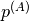 for 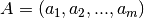, where the positive integers 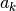, 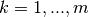, are pairwise relatively prime, can be written as 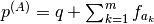 where q is a polynomial with rational coefficients and degree m-1 and 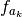 are m periodical functions with period each, which satisfy the condition 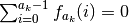. We represent a periodical function by an object of type PeriodObject containing its period and a list of function values 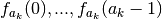.
The time needed to construct a RestrictedPartitionFunctionRelprim object for a specific restriction list A in seconds is printed when the calculation is finished, but this can be suppressed by setting the class variable RestrictedPartitionFunction.print_time=False.
EXAMPLES:
Construct partition function for a specific restriction list and use it to get the number of partitions for several numbers:
sage: RestrictedPartitionFunctionRelprim.print_time=False # suppress timing for doctest
sage: pa=RestrictedPartitionFunctionRelprim([4,3,5])
sage: pa.number_of_partitions(8)
2
sage: pa.number_of_partitions(10000)
834334
sage: pa.number_of_partitions(10**30)
8333333333333333333333333333433333333333333333333333333334
sage: pa.number_of_partitions(10**10**6).ndigits()
1999998
Showing the polynomial and the periodical functions which represent the partition function for a specific restriction list:
sage: pa=RestrictedPartitionFunctionRelprim([4,3,5])
sage: pa.polynomial
1/120*t^2 + 1/10*t + 191/720
sage: pa.periodic_functions
[P=4, values=[5/16, -1/16, -3/16, -1/16],
P=3, values=[2/9, -1/9, -1/9],
P=5, values=[1/5, -1/5, -1/5, 1/5, 0]]
Comparing RestrictedPartitionFunctionRelprim().number_of_partitions() with Partitions().cardinality(). The result must be the same:
sage: A=[4, 5, 21]
sage: pa=RestrictedPartitionFunctionRelprim(parts_in=A)
sage: t=500
sage: pa.number_of_partitions(t) == Partitions(t, parts_in=A).cardinality()
True
sage: len([t for t in [100..200] if pa.number_of_partitions(t) != Partitions(t, parts_in=A).cardinality()])
0
Get the number of partitions of a nonnegative integer t with parts in a specific restriction list as contained in the current object of type RestrictedPartitionFunctionRelprim.
Note that this gives the same result as Partitions(t, parts_in=A).cardinality(), but the once constructed object of type RestrictedPartitionFunctionRelprim can be used to call number_of_partitions consecutively for different values of t and the values of t can be considerably larger.
INPUT:
OUTPUT:
The script resparfunc-relprim-algo2.sage has the same interface as resparfunc-relprim-algo1.sage, but it has a considerably better performance in most cases. For usage details, see description of RestrictedPartitionFunctionRelprim class - first algorithm
Fourier-Dedekind sums are number-theoretic objects. They are closely related to the periodical functions which are part of the representation of the restricted partition function for the special case of pairwise relatively prime numbers.
This function allows to get the Fourier-Dedekind sum 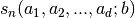 for a list of positive integers 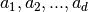 and a positive integer b, where b is relatively prime with each 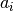, 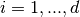.
INPUT:
OUTPUT:
EXAMPLES:
Calculate a small Fourier-Dedekind sum:
sage: fourier_dedekind_sum([3,5],7)
[1/7, 1/7, 0, -2/7, 2/7, -2/7, 0]
Obtain the Fourier-Dedekind sum for a list consisting of the integer 5 repeated 10 times to illustrate that the algorithm is also usable for numbers with are not coprime. Only b must be coprime with each number of the list. As the resulting Fourier-Dedkind sum is large, we do not display it directly, but only the first, the maximum and the minimum value:
sage: fds=fourier_dedekind_sum([5,5,5,5,5,5,5,5,5,5],101)
sage: fds[0]
-2198653249650/101
sage: max(fds)
2304180724030/101
sage: min(fds)
-2309826017050/101